Real PDFs: MoonPDF vs reference
Downloaded public documents at 72 dpi, first page. These are genuine differential checks, not hand-picked demo shapes. Higher pixel closeness is better; 0.90 is the pass tolerance.
Attention Is All You Need
90.2% · pass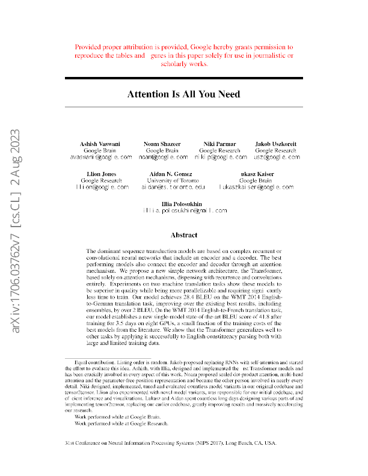
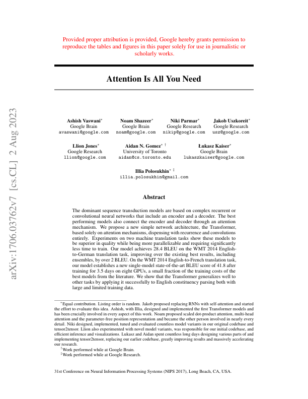
Type1 text, two-column layout, transparency and vector rules. This page was the first text-heavy real paper to cross the 90% tolerance.
IRS Form 1040
82.5% · known gap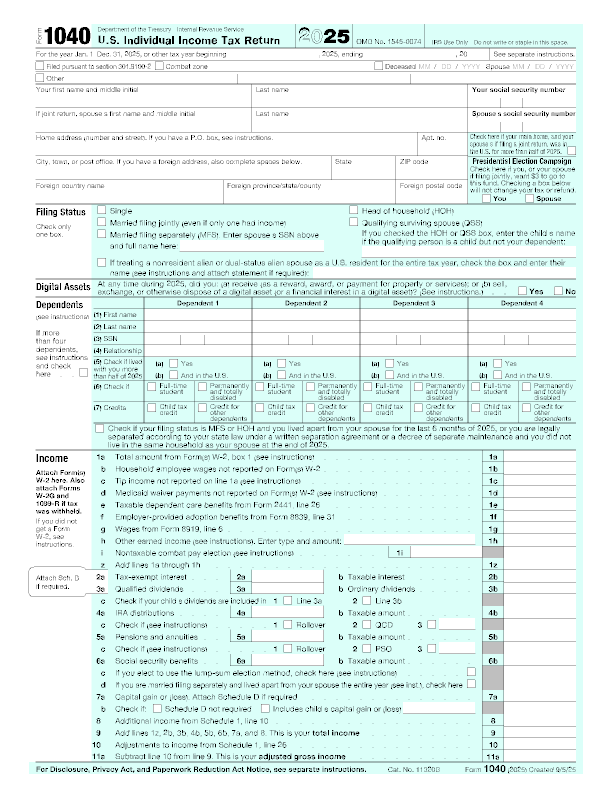
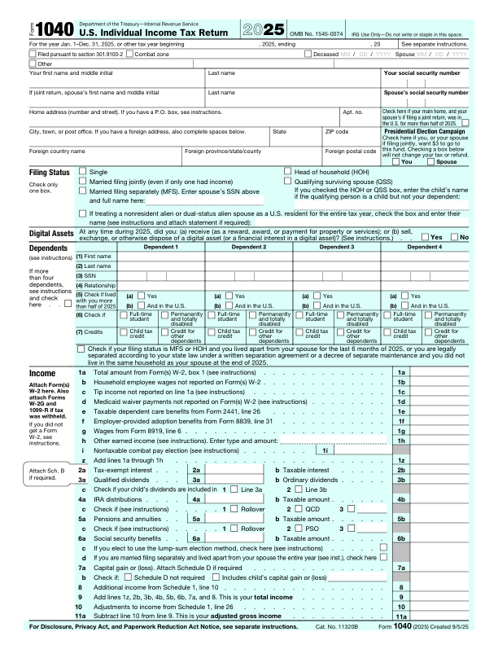
Government form with CFF subsets and tightly packed fields. Layout and form rules are correct; remaining differences are font-face / hinting details in the CFF subsets.
PDF.js blend modes
87.4% · known gap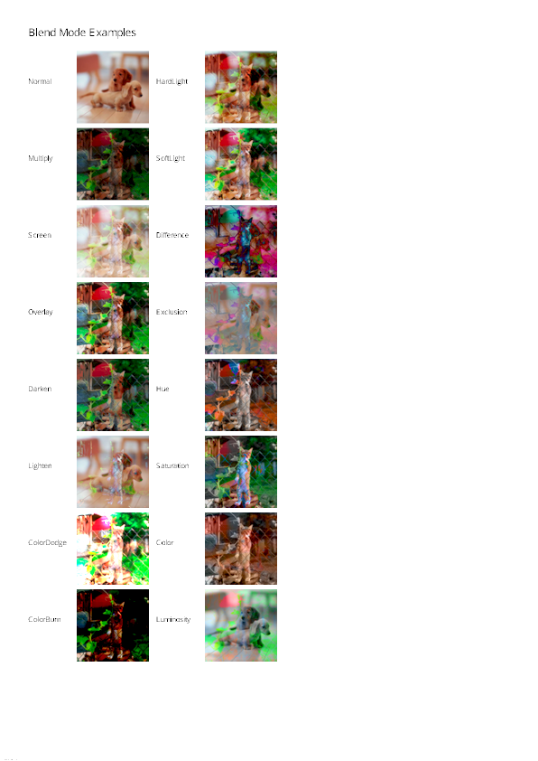
All 16 blend modes including Hue, Saturation, Color and Luminosity. Remaining error is image sampling / color detail, not a missing mode.
Fixture gallery
Every image below is generated by the current renderer from a committed PDF fixture. The fixtures cover fonts, images, patterns, transparency and incremental updates.
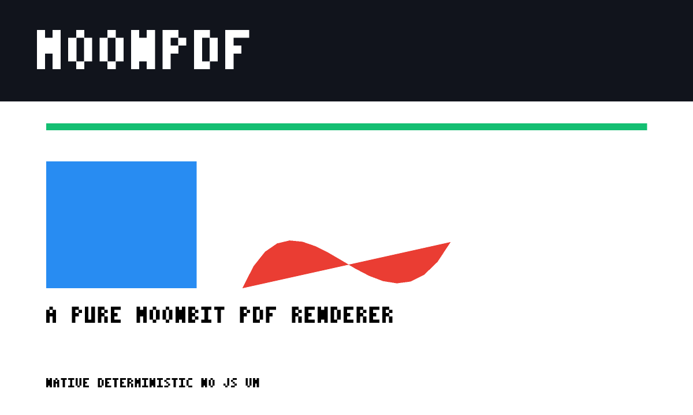
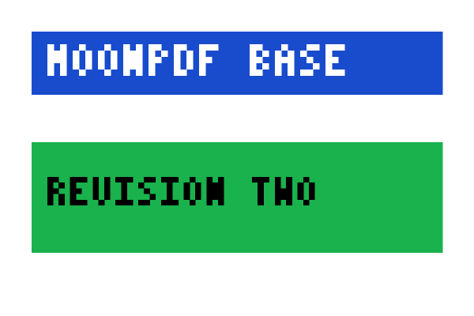
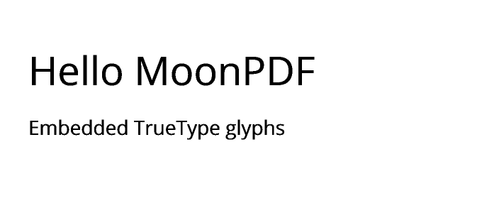
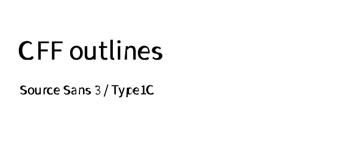
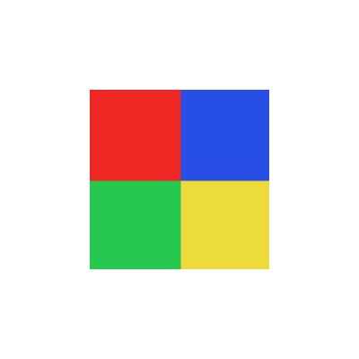
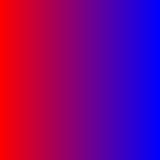
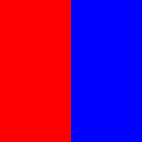
Run it
CLI
moon run cmd/moonpdf -- input.pdf out.png --scale 2
moon run cmd/moonpdf -- input.pdf --all --out-dir out --svg
moon run cmd/moonpdf -- input.pdf --pages 1,3-5 --out-dir outCLI options: --page, --all, --pages, --out-dir, --scale, --svg.
Library
let doc = @moonpdf.MoonPdfDocument::open(data)
let pages = doc.page_count()
let png = doc.render_png(0, 1.0)
let svg = doc.render_svg(0, 1.0)Also available: page_count(data), render_page_png, parse_document, render_page.
Verification
What is checked
moon check --deny-warnandmoon test- differential MAE / pixel closeness against PyMuPDF
- fixture renders and pixel probes in CI
- clean-clone build, CLI smoke, multi-page / SVG paths
Known gaps, stated plainly
- reference font hinting is not reproduced exactly
- IRS form CFF subsets still differ at title size
- a few image/blend color details are below 0.90
- no browser wasm wrapper in 0.44.0; core is wasm-gc
Full numbers: real corpus · fixtures · acceptance audit. Release notes: 0.44.0.